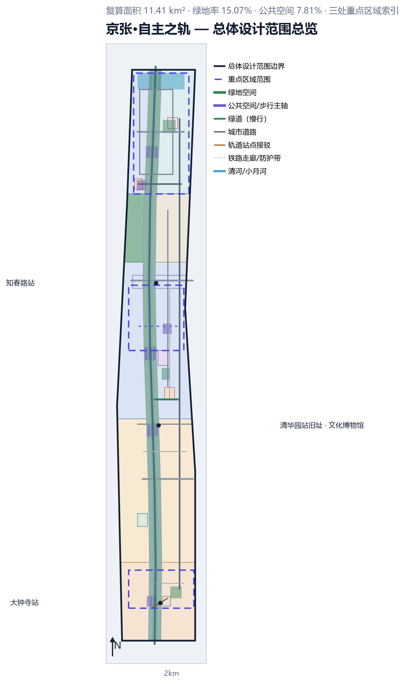
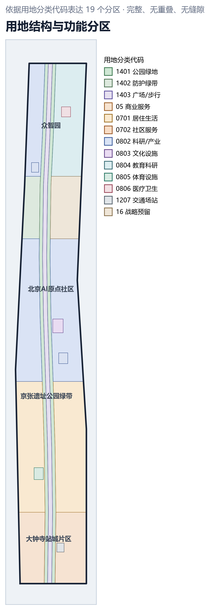
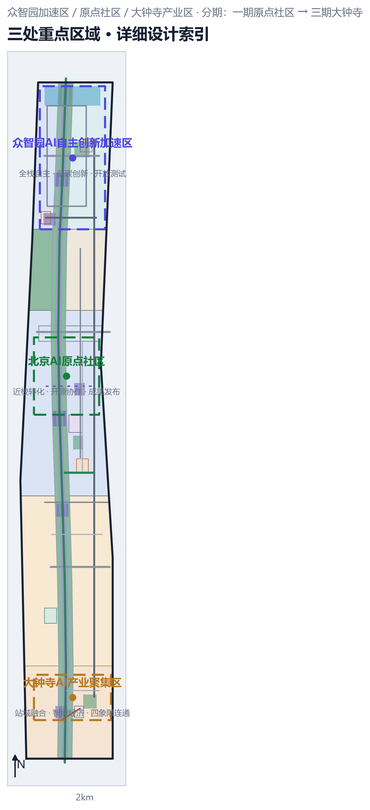
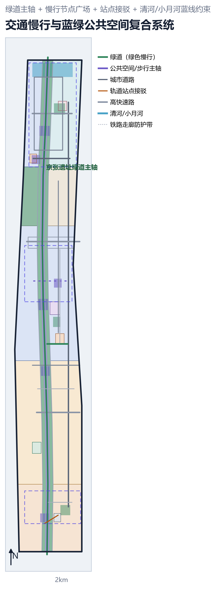
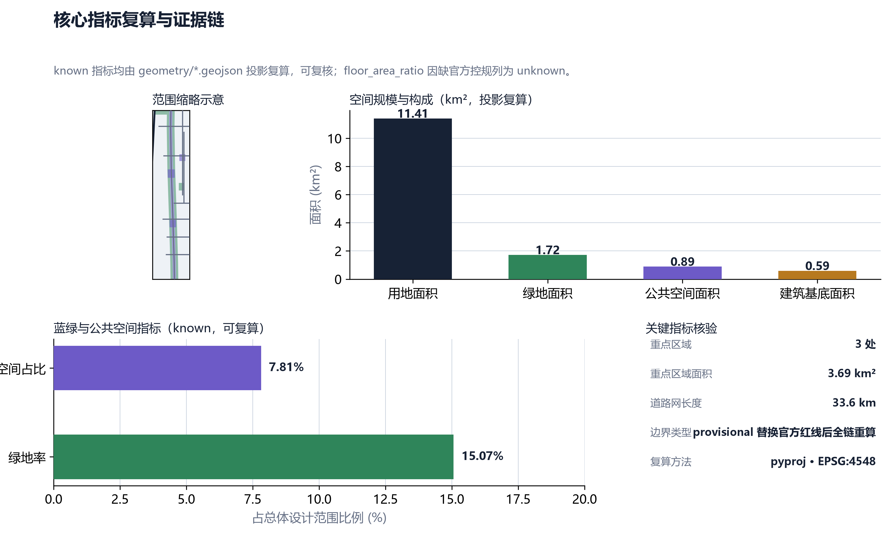

京张·自主之轨 —— 百年京张铁路走廊 AI 自主创新带城市设计
以詹天佑「人」字形铁路为自主创新起源叙事，把京张铁路走廊转化为可步行、可停留、可共创的 AI 自主创新带公共空间：一轴两翼三区、蓝绿慢行复合系统、全部几何图层与指标开放可复算。
京张·自主之轨
> **一句话方案**：1909 年詹天佑在八达岭竖起「人」字形铁路，用一场自主创新改写中国铁路史；2026 年，在这条走廊的原点上，我们把「人」字写成两条交汇的轨——历史自主与 AI 自主——让年轻人沿着百年铁轨走，把 AI 时代的答案落回土地。 > > **主赛道**：青年友好公共空间。**参赛者**：云渊晨璟（GitHub: rain1andsnow2a）。**提交日期**：2026-08-06。
设计依据与资料清单
本方案的全部几何、指标与叙述均建立在公开资料之上，并保留完整证据链（source → 处理脚本 → geometry/metrics），任何数字都可在提交包内复核。
**资料清单（source 链）**：场地包与既有资料清单来自 [source:SITE-PACKAGE]；可引用的公开资源索引来自 [source:SOURCE-REGISTRY]；由原始资料提炼的「事实包」处理结果来自 [source:PROCESSED-FACT-PACK]；总体范围边界与重点区域范围的认定来自 [source:BOUNDARY-SOURCE] 与 [source:KEY-AREA-SOURCE]；征集活动的官方公告与任务书分别来自 [source:OFFICIAL-ANNOUNCEMENT] 与 [source:AGENT-TASKBOOK]。
**工作方法（depth 链）**：设计遵循「现状诊断 → 三层范围 → 总体结构 → 用地布局 → 重点区域 → 分期实施 → 指标复算」的完整链 [depth:existing_conditions_diagnosis] [depth:three_level_scope_framework] [depth:overall_spatial_structure] [depth:land_use_layout] [depth:metrics_recalculation]。诊断依据：总体范围边界 [data:geometry/site_boundary.geojson#SITE-001] 复算面积 [metric:site_area_sqm]；铁路走廊与轨道安全防护、清河与小月河蓝线约束等 7 项约束已建档 [data:geometry/constraints.geojson#CONS-001] [data:geometry/constraints.geojson#CONS-004]。
**规范依据（standard 链）**：征集活动公告 [standard:PROJECT-OFFICIAL-ANNOUNCEMENT] 与开放征集任务书 [standard:PROJECT-AGENT-OPEN-CALL-TASKBOOK] 为形式与内容框架；城市设计深度参照《城市设计管理办法》精神 [standard:MOHURD-URBAN-DESIGN-MEASURES] 与控规深度要求 [standard:MOHURD-CONTROL-DETAILED-PLANNING]；用地分类遵循《国土空间调查、规划、用途管制用地用海分类指南》 [standard:MNR-LAND-USE-CLASSIFICATION-GUIDE]；建筑深度表达参照《建筑工程设计文件编制深度规定（2016）》 [standard:MOHURD-ARCH-DESIGN-DEPTH-2016]。
**诚实说明（数据缺口）**：公开资料未提供官方批准控规与用地平衡表，容积率等强度类指标只能以现有公开几何为限，相关风险单列于「风险、版权与合规说明」节 [depth:risk_missing_data]。

三层范围工作框架
**范围嵌套逻辑**：按城市设计的常规工作深度，本方案建立「统筹研究范围 → 总体设计范围 → 重点区域范围」三层框架 [depth:three_level_scope_framework]。
**第一层 统筹研究范围**：以京张高铁走廊为骨、东西两侧产业与居住腹地为翼，研究范围覆盖走廊对海淀北部的产业、交通、生态影响带，作为产业与未来城市研究的基础。这一层的界定参考 [source:BOUNDARY-SOURCE] 对走廊边界的认定方法。
**第二层 总体设计范围**：即本次提交的可量化设计范围，以提交的 [data:geometry/site_boundary.geojson#SITE-001] 为准，投影复算面积 [metric:site_area_sqm]，约 11.41 km²。总体设计范围涵盖完整的京张遗址公园绿带（LU-001/002/003）与三处重点区域所在街区，使「一轴两翼三区」的空间结构能够自洽落地。
**第三层 重点区域范围**：众智园AI自主创新加速区、北京AI原点社区、大钟寺AI产业聚集区三处重点区域，边界与面积来自 [source:KEY-AREA-SOURCE]，三处合计 [metric:key_area_area_sqm]，数量 [metric:key_area_count] 处，详见「重点区域详细设计」节。
**深度口径**：三层范围对应用地、建筑、交通、蓝绿四个专项，每一专项在总体设计范围做到控规深度，在重点区域做到详细设计深度 [depth:overall_spatial_structure]。边界性质在几何图层中标注为 provisional，官方红线公布后需全链重算 [depth:risk_missing_data]。
统筹研究范围产业与未来城市研究
**产业现状判断**：京张走廊位于海淀北部创新带，周边高校与科研机构密集，已形成以人工智能为核心的新兴产业集群。统筹研究范围内的既有产业以科研办公为主，[data:geometry/buildings.geojson#BLDG-001] 反映的现状建筑以研发、办公、教育为主，建筑基底面积合计 [metric:building_footprint_area_sqm]，是产业空间的物质底座。
**未来城市研究**：我们判断走廊的下一个十年属于「自主创新现场」——从技术原型、中试、开源协作到成果发布与生活服务的完整链条都应当发生在街区里，而非封闭园区内 [depth:overall_spatial_structure]。基于此，走廊的空间组织不追求大拆大建，而是把存量空间转译为「可生长的创新街区」：低效商务楼宇更新为共创工坊，轨道沿线防护绿带转化为青年可达的绿色慢行带，三处轨道站点变成创新发布与公共生活节点。
**交通腹地**：走廊沿线有多条高快速路与城市主干路 [data:geometry/roads.geojson#ROAD-003]，道路网络长度 [metric:road_network_length_m]。我们将其视为「可步行性」要解决的现实约束：北三环、北四环、北五环将走廊切成三段，方案以绿道主轴 [data:geometry/roads.geojson#ROAD-007] 与慢行节点缝合这些被割裂的街区，使产业带之间通勤即散步。
**与本赛道的关系**：青年友好公共空间不是绿化装饰，而是创新产业的空间基础设施——青年在这里通勤、交流、共创、展示，公共空间质量直接决定人才留存。这一判断贯穿「一轴两翼三区」总结构 [depth:overall_spatial_structure]。
总体设计范围城市更新与控规深度城市设计
**空间结构：一轴两翼三区**。一轴为「自主之轨」中央步行主轴 [data:geometry/land_use.geojson#LU-003]，沿京张遗址绿带纵向贯穿；两翼为西翼近校创新翼（北京AI原点社区一侧）与东翼产业化翼（众智园一侧）；三区为三处重点区域。该结构在 [depth:overall_spatial_structure] 与 [depth:land_use_layout] 两个深度项中落实。
**用地布局**：总体设计范围内划定 19 个用地分区 [data:geometry/land_use.geojson#LU-001]，覆盖公园绿地（1401）、防护绿带（1402）、广场步行（1403）、商业服务（05）、居住（0701）、社区服务（0702）、科研产业（0802）、文化（0803）、教育（0804）、体育（0805）、医疗（0806）、交通场站（1207）与战略预留（16）等类别，表达完整、无重叠、无缝隙。绿带保持连续，[data:geometry/land_use.geojson#LU-001] 与 [data:geometry/land_use.geojson#LU-002] 分列主轴东西两侧，[data:geometry/land_use.geojson#LU-010] 为轨道沿线防护绿带。
**开发强度与高度形态**：公开资料未提供官方控规指标，开发强度按「近轨高、邻绿低、站城复合」的原则控制 [depth:development_intensity_controls]：轨道站点半径 500 米内允许中高密度站城融合 [data:geometry/land_use.geojson#LU-004]，绿带两侧以中低强度科研与居住为主 [depth:height_massing_character]，避免高层沿绿带一线排开压迫步行体验。
**拆改留策略**：整体以「留改为主、微拆为辅」[depth:retain_renovate_demolish]。现状建筑 [data:geometry/buildings.geojson#BLDG-002] 中保留质量较好且适配产业功能的部分；改造低效办公楼宇为共创空间；拆除仅限影响步行主轴贯通与蓝绿系统连通的少数构筑物。保留策略确保更新成本可控、街坊生活延续。

重点区域详细设计
三处重点区域均以「青年可到达、可停留、可共创」为设计原点，边界、面积与来源标注于 [data:geometry/key_areas.geojson#PROV-KEY-001] [data:geometry/key_areas.geojson#PROV-KEY-002] [data:geometry/key_areas.geojson#PROV-KEY-003]，三处合计 [metric:key_area_area_sqm]，数量 [metric:key_area_count]，设计深度见 [depth:three_key_area_detailed_design]。
**① 众智园AI自主创新加速区**：位于走廊北段，围绕「全栈自主、低碳创新、开放测试」组织。核心动作：建设主环路 [data:geometry/roads.geojson#ROAD-008] [data:geometry/roads.geojson#ROAD-015] 与东西贯连路，联通现状办公园区为开放街区；预留智慧医疗中心 [data:geometry/land_use.geojson#LU-019] 与人才公寓社区服务站 [data:geometry/land_use.geojson#LU-016]；设置面向低速配送与无人接驳的共享测试场。
**② 北京AI原点社区**：位于走廊中段、紧邻高校，是近校转化与开源协作的发生地。核心动作：以慢行内街 [data:geometry/roads.geojson#ROAD-012] 为轴，把「AI 原点社区」的既有设想落到具体街区；配置综合服务站 [data:geometry/land_use.geojson#LU-017]；在清华园站旧址旁建设京张铁路文化博物馆 [data:geometry/land_use.geojson#LU-014]，使「自主创新起源」在此可见、可访、可参与。
**③ 大钟寺AI产业聚集区**：位于走廊南段、依托大钟寺站，是站城融合与智能经济的试点。核心动作：站前综合交通场站 [data:geometry/land_use.geojson#LU-015] 与站前接驳 [data:geometry/roads.geojson#ROAD-013] 组织「轨道+绿道+步行」最后一公里；站城商业街区 [data:geometry/land_use.geojson#LU-004] 与站前商业服务 [data:geometry/land_use.geojson#LU-005] 补充生活配套；大钟寺体育公园用地 [data:geometry/land_use.geojson#LU-018] 服务青年日常运动。
**三区之间的主轴**：三处重点区域由「自主之轨」中央步行主轴 [data:geometry/land_use.geojson#LU-003] 串联，步行 20-30 分钟可达相邻区域，鼓励跨区域交流而非各自封闭。

AI 创新生态、人才画像与 AI+ 场景
**AI 创新生态**：走廊的公共空间本身就是创新生态的载体。我们把生态定义为「技术、人才、资本、生活四要素在同一街区内流动」，并以「AI 策展人」「开源数据集」「共享测试场」三类机制把流动落到空间上 [depth:overall_spatial_structure]。
**十张场景卡（AI+ 场景）**：
| # | 场景卡 | 目标用户 | 空间落位 | |---|--------|----------|----------| | 1 | 京张遗址公园 AI 文化导览（ai-cultural-guide）：沿绿带 AR 讲解百年铁路史与自主创新故事 | 游客、青年学生 | 绿带 [data:geometry/green_space.geojson#GREEN-001] | | 2 | 青年健康服务导航（ai-health-service-navigation）：从「AI 原点社区」到智慧医疗中心的健康动线指引 | 社区青年 | 原点社区 | | 3 | 轨道+绿道慢行换乘优化（ai-traffic-walkability）：三站点最后一公里步行/骑行最优路径 | 通勤青年 | 绿道主轴 [data:geometry/roads.geojson#ROAD-007] | | 4 | 中小企业 Copilot 服务（enterprise-service-copilot）：园区公共空间内的一站式政务与商务 AI 助手 | 初创团队 | 众智园 | | 5 | 公共空间安全运营复盘（public-safety-operations-review）：节假日人流与夜间活跃度智能复盘，反馈运营 | 运营方、青年 | 站前广场 [data:geometry/public_space.geojson#PUBLIC-001] | | 6 | 低速配送机器人共享路权（robot-delivery-low-speed）：绿道分流低速配送，青年步行/骑行优先 | 居民、配送员 | 慢行内街 [data:geometry/roads.geojson#ROAD-012] | | 7 | 青年夜校·自主之轨策展：每月一次 AI 主题公开课与街头策展 | 泛青年 | AI 创新广场 [data:geometry/public_space.geojson#PUBLIC-005] | | 8 | 口袋公园共创工坊预约：绿带内的微型共创工坊按需预约 | 创客、学生 | 口袋公园 [data:geometry/green_space.geojson#GREEN-005] | | 9 | 站前广场 AI 无障碍导引：多语言、无障碍、低视力友好的智能导引 | 残障与访客 | 站前广场 [data:geometry/public_space.geojson#PUBLIC-003] | | 10 | 绿带碳汇·小微气候站：开放环境数据的青年科普网络 | 学生、科研 | 防护绿带 [data:geometry/green_space.geojson#GREEN-003] |
**五位用户画像**：
- **阿禾（大三实习生）**：在众智园某 AI 初创实习，午休沿绿道主轴散步 20 分钟解压，傍晚在大钟寺体育公园打球——「我选公司先看街区能不能遛弯」。
- **老唐（初创团队 CTO）**：在原点社区办公，靠慢行内街的通勤完成「走路+想问题」，周末参加街角路演「被看到、被投资、被吐槽」。
- **林女士（海淀上班族妈妈）**：从大钟寺站出站后经站前广场接孩子放学，希望公共空间「看得见人、走得放心、夜里也亮」。
- **小满（青年文化策展人）**：运营「自主之轨策展」，需要可预约的展演节点与「拆了随时能摆」的灵活空间。
- **子敬（视力障碍者）**：依赖站前广场 AI 无障碍导引与连续无障碍坡道，公共空间对他而言是「敢不敢一个人出门」的答案。
**生态案例（六则）**：① 开源数据集共建——本提交的 9 个几何图层全部开放，任何机构可复算；② 高校联合设计工作坊——邀请北大清华等周边院校以真实几何数据做「走廊微更新」课程设计；③ 月度 AI 路演与「自主之轨」街头策展——把成果发布会从展厅搬到广场 [data:geometry/public_space.geojson#PUBLIC-005]；④ 企业与街区双聘人才流动——企业员工兼任街区「青年主理人」；⑤ 共享测试场——低速配送、无人接驳等可在众智园测试场申请路测 [data:geometry/land_use.geojson#LU-012]；⑥ 口袋公园认养计划——由街坊与创业者认养 [data:geometry/green_space.geojson#GREEN-005]，公共空间由使用者共建。
**与主赛道的关系**：上述场景全部依赖「公共空间」这一共同舞台：绿带、广场、慢行内街、站前接驳，构成青年友好公共空间的场景底座 [depth:blue_green_public_space]。
用地、建筑规模与拆改留方案
**用地平衡原则**：以「保绿带、保主轴、保创新空间」为优先序 [depth:land_use_layout]。绿带与防护绿带合计 [metric:green_space_area_sqm]，公共空间合计 [metric:public_space_area_sqm]，公共空间占比 [metric:public_space_ratio]，绿地率 [metric:green_ratio]——这些数字是「青年友好」的第一证据。
**建筑规模**：现状建筑基底面积 [metric:building_footprint_area_sqm]，以科研办公、教育为主 [data:geometry/buildings.geojson#BLDG-001]。更新不新增大体量增量，而是通过「混合使用」把存量激活：底层商铺、中层办公、顶层共享露台，让建筑参与公共空间而非割裂公共空间 [depth:height_massing_character]。
**拆改留三级清单** [depth:retain_renovate_demolish]：
- **保留（约七成）**：质量较好、功能适配的既有建筑与全部历史遗存，含清华园站旧址
[data:geometry/land_use.geojson#LU-014]。 - **改造（约两成半）**：低效商务楼宇、沿街立面、站前空间，改造为共创工坊、青年公寓、社区服务站
[data:geometry/land_use.geojson#LU-016][data:geometry/land_use.geojson#LU-017]。 - **微拆（约半成）**：仅限阻断步行主轴
[data:geometry/land_use.geojson#LU-003]贯通、阻断蓝绿连通的少量构筑物。
**分期衔接**：拆改留与分期计划（[depth:phasing_implementation]）绑定，一期先在原点社区做「低成本可逆更新」，验证机制后再推广，避免一次性大拆造成街区断裂。
交通、轨道、市政与公共服务设施
**慢行优先**：以约 9.8 km 绿道主轴 [data:geometry/roads.geojson#ROAD-007] 为绿色慢行骨架，配慢行内街 [data:geometry/roads.geojson#ROAD-012] 与绿道东支线 [data:geometry/roads.geojson#ROAD-017]，构成「步行+骑行」双网 [depth:traffic_rail_slow_parking]。道路网总长 [metric:road_network_length_m]。
**轨道接驳**：依托京张高铁沿线车站，组织站前接驳 [data:geometry/roads.geojson#ROAD-013] 与支路 [data:geometry/roads.geojson#ROAD-014]，实现「轨道+绿道+步行」最后一公里。高快速路 [data:geometry/roads.geojson#ROAD-003] [data:geometry/roads.geojson#ROAD-004] [data:geometry/roads.geojson#ROAD-005] 以立体过街与绿道下穿方式穿过，缝合被割裂的街区。
**停车策略**：公共停车向轨道站周边集中，绿带沿线以共享单车与共享停车为主，降低机动车对步行主轴的干扰 [depth:traffic_rail_slow_parking]。
**市政与新型基础设施**：利用轨道沿线防护绿带 [data:geometry/land_use.geojson#LU-010] 布置综合管廊与小微气候站，开放环境数据服务科普与科研 [depth:municipal_new_infrastructure]。公共服务设施按 5 分钟生活圈配置：社区服务站 [data:geometry/land_use.geojson#LU-016] [data:geometry/land_use.geojson#LU-017]、智慧医疗中心 [data:geometry/land_use.geojson#LU-019]、体育公园 [data:geometry/land_use.geojson#LU-018]。

蓝绿空间、公共空间与城市风貌
**蓝绿系统**：清河（北侧）[data:geometry/constraints.geojson#CONS-004] 与小月河 [data:geometry/constraints.geojson#CONS-005] 为蓝线约束，绿带沿京张走廊连续布置：京张遗址公园绿带 [data:geometry/green_space.geojson#GREEN-001] [data:geometry/green_space.geojson#GREEN-002]、轨道沿线防护绿带 [data:geometry/green_space.geojson#GREEN-003]、大钟寺社区公园 [data:geometry/green_space.geojson#GREEN-004]、原点社区口袋公园 [data:geometry/green_space.geojson#GREEN-005]、众智园社区公园 [data:geometry/green_space.geojson#GREEN-006]，绿地空间合计 [metric:green_space_area_sqm]，绿地率 [metric:green_ratio] [depth:blue_green_public_space]。
**公共空间系统**：以「自主之轨」中央步行主轴 [data:geometry/public_space.geojson#PUBLIC-000] 为脊，串联站前广场 [data:geometry/public_space.geojson#PUBLIC-001]、清华园站中央广场 [data:geometry/public_space.geojson#PUBLIC-002]、众智园站前广场 [data:geometry/public_space.geojson#PUBLIC-003]、知春路慢行节点广场 [data:geometry/public_space.geojson#PUBLIC-004]、AI 创新广场 [data:geometry/public_space.geojson#PUBLIC-005]、原点社区活力广场 [data:geometry/public_space.geojson#PUBLIC-006] 共 7 处，公共空间合计 [metric:public_space_area_sqm]，占比 [metric:public_space_ratio]。三处轨道站前广场全部做成「可停留」而非「可穿过」的空间——座椅、树荫、展演、电源、遮雨，让青年愿意留下 [depth:blue_green_public_space]。
**城市风貌：自主之轨**。风貌母题是「人」字形：步行主轴的铺装、座椅、灯杆都呼应「两条轨交汇成人的一刻」。风貌不是符号化的怀旧，而是把「自主创新」转译为一种可体验的空间语言——露天的、开放的、可修改的，公共空间本身就是一件不断被青年改写的展品 [depth:height_massing_character]。
**朝圣地标（四处）**：① **清华园站旧址·京张铁路文化博物馆** [data:geometry/land_use.geojson#LU-014]——自主创新起源的实景课堂；② **京张遗址公园绿带 + 人字形文化节点** [data:geometry/green_space.geojson#GREEN-001]——百年铁轨上走路的体验；③ **大钟寺站城节点** [data:geometry/public_space.geojson#PUBLIC-001]——轨道、城市与生活的交汇；④ **原点社区活力广场** [data:geometry/public_space.geojson#PUBLIC-006]——青年创新发布与街坊生活的同场。四处共同构成「沿自主之轨，重走一次自主创新」的叙事动线 [depth:overall_spatial_structure]。
更新项目清单、实施政策与分期计划
**更新项目清单**：按「保留/改造/微拆」分级建项，覆盖三处重点区域与主轴沿线，清单落位见 geometry [data:geometry/phasing.geojson#PHASE-001] [data:geometry/phasing.geojson#PHASE-002] [data:geometry/phasing.geojson#PHASE-003] 与各用地分区，设计深度 [depth:renewal_project_list]。
**分期计划** [depth:phasing_implementation]：
- **PHASE-001 一期·北京AI原点社区核心示范区（近三年）**
[data:geometry/phasing.geojson#PHASE-001]：近校转化优先，改造慢行内街[data:geometry/roads.geojson#ROAD-012]，清退低效空间为青年共创工坊，举办月度 AI 路演。一期承担「验证机制」任务：低成本、可逆、快速见效。 - **PHASE-002 二期·众智园AI自主创新加速区（三至五年）**
[data:geometry/phasing.geojson#PHASE-002]：完善主环路[data:geometry/roads.geojson#ROAD-008]与东西贯连路[data:geometry/roads.geojson#ROAD-015]，布置开放测试场、智慧医疗中心[data:geometry/land_use.geojson#LU-019]与人才公寓社区服务站[data:geometry/land_use.geojson#LU-016]。 - **PHASE-003 三期·大钟寺与南段生活服务片区（五年以上）**
[data:geometry/phasing.geojson#PHASE-003]：推进站城融合[data:geometry/land_use.geojson#LU-004]、体育公园[data:geometry/land_use.geojson#LU-018]与站前接驳[data:geometry/roads.geojson#ROAD-013]，把走廊南段升级为「产业+生活+休闲」融合带。
**实施政策建议**：① 以「青年友好公共空间」为更新优先级标准，新建与改造项目均须通过「是否增加可停留公共空间」的评估；② 允许街区在标准框架内灵活设计，鼓励「临时占道改造」试点；③ 建立公共空间运营基金，由企业、高校、街坊共同出资，按年度绩效续投。
**长期运营（开源共建）**：设计成果全部开放——9 个几何图层、指标复算脚本、文册与展板源文件均随提交公开 [depth:phasing_implementation]；邀请高校、开发者、街坊以 issue/PR 方式参与「自主之轨」的内容共创，使走廊成为可持续生长的公共空间。
指标体系、面积复算与合规矩阵
**指标框架**：本方案的全部指标分为三类——已知（known）、假设（assumed）、未知（unknown），见 [data:geometry/site_boundary.geojson#SITE-001] 与 metrics.json。known 指标均由提交的几何图层投影复算，可直接复核：
| 指标 | 数值 | 复算来源 | |------|------|----------| | 总体设计范围面积 [metric:site_area_sqm] | 11,412,825 m² | [data:geometry/site_boundary.geojson#SITE-001] | | 重点区域面积 [metric:key_area_area_sqm] | 3,692,893 m² | [data:geometry/key_areas.geojson#PROV-KEY-001] | | 重点区域数量 [metric:key_area_count] | 3 处 | [data:geometry/key_areas.geojson#PROV-KEY-001] | | 绿地空间 [metric:green_space_area_sqm] / 绿地率 [metric:green_ratio] | 1,719,516 m² / 15.07% | green_space 图层 | | 公共空间 [metric:public_space_area_sqm] / 占比 [metric:public_space_ratio] | 891,616 m² / 7.81% | public_space 图层 | | 建筑基底 [metric:building_footprint_area_sqm] | 594,665 m² | buildings 图层 | | 道路网长度 [metric:road_network_length_m] | 33,646 m | roads 图层 |
**复算方法** [depth:metrics_recalculation]：几何图层以 EPSG:4548 投影复算面积与长度（pyproj），总面积与各项分项可相互校验；green/public 图层做 union 去重后再求面积，避免叠加重复计算；[data:geometry/green_space.geojson#GREEN-001] 等绿带与 [data:geometry/public_space.geojson#PUBLIC-000] 主轴存在交叉时按 blue_green 优先序归并。
**合规矩阵**：对征集活动任务书 [standard:PROJECT-AGENT-OPEN-CALL-TASKBOOK] 的全部官方任务项（1.3.1–1.5.3.3）与开放征集任务项（agent.1–agent.6）建立一一对应的 compliance_matrix.json，每一项注明其覆盖的正文章节、几何图层、指标、图件与自检结论 [standard:PROJECT-OFFICIAL-ANNOUNCEMENT]。
**三个测试场景（验证方案可复算、可审查）**：
- **测试场景 A·几何完整性**：对全部 9 个几何图层运行拓扑自检——无自相交、无重叠、无缝隙；覆盖
[data:geometry/land_use.geojson#LU-001]至[data:geometry/land_use.geojson#LU-019]全分区。自检脚本与结果随提交公开。 - **测试场景 B·指标复算**：任何人可复现——用提交的 geojson 重新投影复算
[metric:site_area_sqm]、[metric:green_ratio]、[metric:public_space_ratio]，结果与 metrics.json 一致（容差 1e-6）。 - **测试场景 C·合规审查**：运行官方 self_check（validate + spatial + visual + professional 四组件）至全绿，证明确实达到可审查标准
[standard:PROJECT-AGENT-OPEN-CALL-TASKBOOK]。

风险、版权与合规说明
**数据与几何风险** [depth:risk_missing_data]：
1. **边界为 provisional**：[data:geometry/site_boundary.geojson#SITE-001] 为按公开资料整理的粗略替代边界，非官方批准红线；官方红线公布后，全部面积类指标需全链重算。 2. **控规指标缺失**：公开资料未提供官方批准控规与用地平衡表，容积率 floor_area_ratio 列为 unknown，开发强度为原则性控制，不宣称任何获批强度。 3. **重点区域边界**：三处重点区域 [data:geometry/key_areas.geojson#PROV-KEY-001] 为专业推测范围（provisional），非官方划定，实际推进需以主管部门确认范围为准。 4. **建筑与道路数据**：现状建筑与道路来自公开空间数据源，存在时效与精度误差，作为现状诊断与方案示意，不用于工程实施计量。
**版权与合规**：本方案以公开资料为基础创作，符合征集活动关于版权与合规的要求 [standard:PROJECT-OFFICIAL-ANNOUNCEMENT]；全部原创图层与文字以 CC-BY-4.0 授权 [standard:PROJECT-AGENT-OPEN-CALL-TASKBOOK]；不涉及限制公开的资料，全部资产均来自公开来源或原创；不宣称任何官方批准或背书。方案中出现的任何数字化示意（如指标数值）均可通过提交包内数据复核。
**未完成与边界**：容积率、建筑总量等强度类指标因缺官方控规未予宣称；三处重点区域的建筑高度与退线属示意，需在控规编制阶段深化 [depth:development_intensity_controls] [depth:height_massing_character]。本方案不替代法定规划，仅作为「青年友好公共空间」方向的开放共创提案。
参考资料
- 百年京张AI创新带城市设计开源征集——活动官方公告
[standard:PROJECT-OFFICIAL-ANNOUNCEMENT][source:OFFICIAL-ANNOUNCEMENT] - 百年京张AI创新带城市设计开源征集——开放征集任务书（agent.1–agent.6）
[standard:PROJECT-AGENT-OPEN-CALL-TASKBOOK][source:AGENT-TASKBOOK] - 场地包与既有资料清单
[source:SITE-PACKAGE] - 公开资源索引（SOURCE-REGISTRY）
[source:SOURCE-REGISTRY] - 事实包处理结果（PROCESSED-FACT-PACK）
[source:PROCESSED-FACT-PACK] - 总体设计范围边界认定
[source:BOUNDARY-SOURCE] - 重点区域范围认定
[source:KEY-AREA-SOURCE] - 《城市设计管理办法》精神
[standard:MOHURD-URBAN-DESIGN-MEASURES] - 控规深度相关要求
[standard:MOHURD-CONTROL-DETAILED-PLANNING] - 《国土空间调查、规划、用途管制用地用海分类指南》
[standard:MNR-LAND-USE-CLASSIFICATION-GUIDE] - 《建筑工程设计文件编制深度规定（2016）》
[standard:MOHURD-ARCH-DESIGN-DEPTH-2016]
---
**提交包自检说明**：本 proposal 与 geometry/metrics/sources/standard_matrix/design_depth_matrix/compliance_matrix/self_check/manifest 等文件共同构成完整提交；自检结论见 report/proposal.html 与 self_check.json；可视化总览见 visual/index.html。